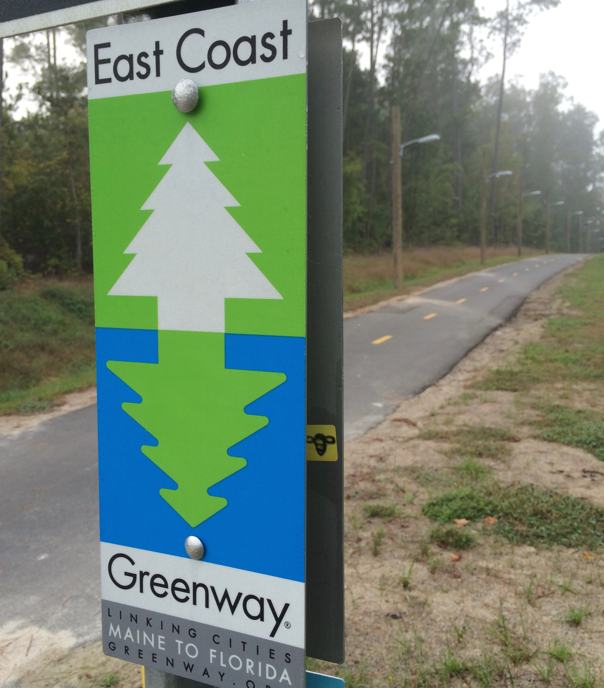

This trip is a while in the making. It was something that sprung essentially fully-formed into mind when I was living in Florida, in a transitional period of my life. I read about people going east to west along major US freeways and thought I could do that too. But then a better (safer) option presented itself and I moved to North Carolina. Fast forward two and a half years, and I’ve created another transitional period for myself. To be more cautious, this time I’ve planned to stay on dedicated bike paths as often as possible, and go only a third of the original cross-country distance: from Durham, NC to Jupiter, FL.
Why do it at all? Many people have asked if I’m doing it for a certain cause. Others have drawn the comparison to the running scene from Forrest Gump — “I just felt like running!” It’s definitely the latter for me. And maybe there’s a link there; Forrest Gump is not only my favorite movie, but for like four hours total today, the 30 seconds of “Hooked on a Feeling” from SNL’s parody of Guardians of the Galaxy were looping in my otherwise empty head. Stupid is as stupid does, I guess. But I shouldn’t get ahead of myself.
The East Coast Greenway piggybacks on the American Tobacco Trail in Durham, so I started there this morning, just north of the recently-completed ATT bridge over I-40. Almost immediately there were two steep downhills in quick succession behind the Southpoint mall, in which I was worried about falling (unfortunate foreshadowing!). Then the ATT smoothed out for about eight miles of the ten I was scheduled to take. The final two were not paved, but a cement/mud mixture that was juuuuuuust liquid enough to make skateboarding impossible. So I started walking, a mere hour into the journey. And walking for two miles is demoralizing above all else! Morning joggers were lapping me.
When I finally reached another paved road, it was smooth asphalt and just the right amount of downhill. After a half hour or so of dejected trudging (and Hooked on a Feeling), I was able to go right into that scene from The Secret Life of Walter Mitty, when Ben Stiller goes all out on his longboard, carving back and forth on an empty picturesque street. At that moment, everything was perfect.
The next 2+ hours were routine skating on bike paths: paved, unthreatening, a mix of uphill and downhill. I began forming lists of likes and dislikes in my head, but they only went so far:
• Likes: moderate downhills
• Dislikes: anything uphill
• Not sure: flat ground, steep downhills
I had a couple of great moderate downhills in this stretch, where I didn’t have to worry about kicking nor the possibility of someone appearing too quickly for me to react. In fact, I had three such lovely downhills interrupted (and made notes of each one): an old lady weaving and covering the whole path, a family with two unpredictable kids on plastic bikes, and having to cross the dumb street.
Then I crossed I-40 again and entered Umstead Park. More loose cement-y gravel in the place of paved road, kind of uphill, for 4–5 miles. So I walked, and it felt like it took forever. But HoaF kept playing and I didn’t get too down. I excitedly got back on the board once I left the park, but it was a moderate uphill that tired me out more than I expected. Once I got a few miles further to the NC museum of art, I thought everything would get better.
I had a little snack and some water, and started on the blue loop trail around the museum park. Some good downhills, some dumb uphills, and some steep downhills. On the second quick downhill, a biker came out from around a turn in my lane. He was chugging hard to make it up the hill and was kind of weaving. I was going too fast to react well, so I swerved to avoid hitting him, bailed off the board, and landed right on the asphalt with my head. EVERYONE WEAR HELMETS! I’m not paralyzed or even hurt that badly, but I tweaked (twerked?) something in my neck, and got small boo boos on my right elbow and knee. That guy kept going too, I don’t think he heard me wipe out.
Every so often today, I skated by an intersection or building that I’d driven by since moving here. I anticipated that, and had planned on going well past my daily 40 mile goal today (powered by the adrenaline of the first day) so I wouldn’t go to sleep in essentially the same metropolitan area I always do. But since my neck doesn’t feel so great, I halfheartedly skated and walked from the museum through Meredith College and NCSU to a hotel in downtown Raleigh where I’m staying tonight.
And if I don’t feel 100% when I wake up, that just means my first rest day comes early! My spirits remain high; I’m thankful nothing worse happened, thankful for helmets, and most of all embarrassed that this simple fool who entertains himself with iTunes music samples managed to hurt himself on day one of at least twenty five.